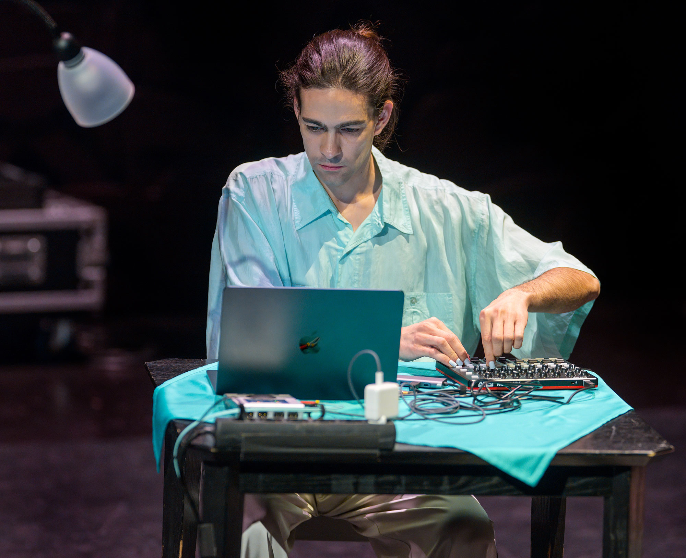
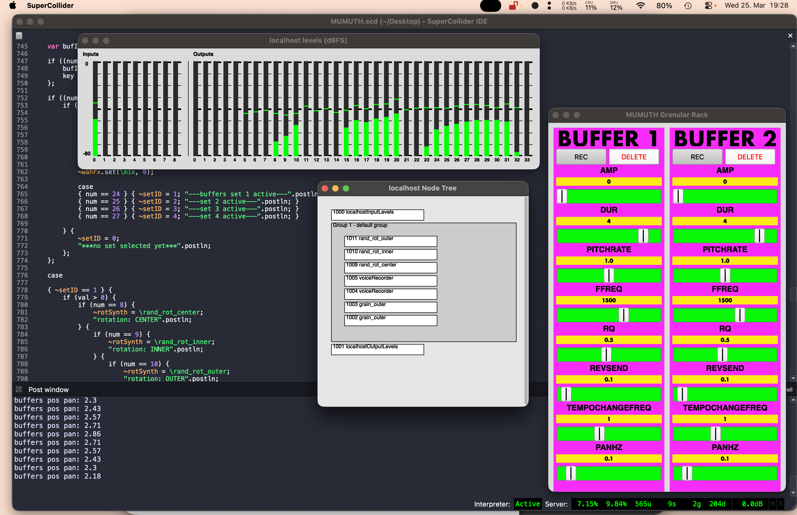

Sonic Synergies [2026] is a multidisciplinary initiative bringing together students from the KUG in Graz, spanning instrumental composition, instrumental and vocal music, computer music and sound art (IEM) and the Performance Practice in Contemporary Music (PPCM Vocal) programme. The project opens up a collaborative framework for exploring the intersections of composition, technology and performance. Inspired by Luciano Berio's Altra voce for alto flute, mezzo-soprano and live electronics, the concert space is expanded both sonically and scenically: boundaries between audience and musicians dissolve, conventional stage arrangements are questioned, and technologies offer new perspectives on the resonant spaces of the instruments. Many of the works also engage with social or political themes, or venture into experimental sound research through varied sound synthesis techniques. an other | thin partitions departs from dominant binary frameworks of gender, desire and consent, unfolding through performative and sonic dialogues that are at once veiled and intertwined. The piece explores the multiplicity of each performer's self as it emerges through relation with others, shifting with spatial position, proximity and interaction. What is visible, what is hidden and what is assumed are continuously renegotiated. Sound travels across partitions, leaking between spaces, while acoustic actions are mirrored, morphed, distorted or absorbed through live electronic processes. A fragmented score binds it all together, forming a living ecosystem of exchange, proximity and transformation.




Photos: Johnanes Gellner ©